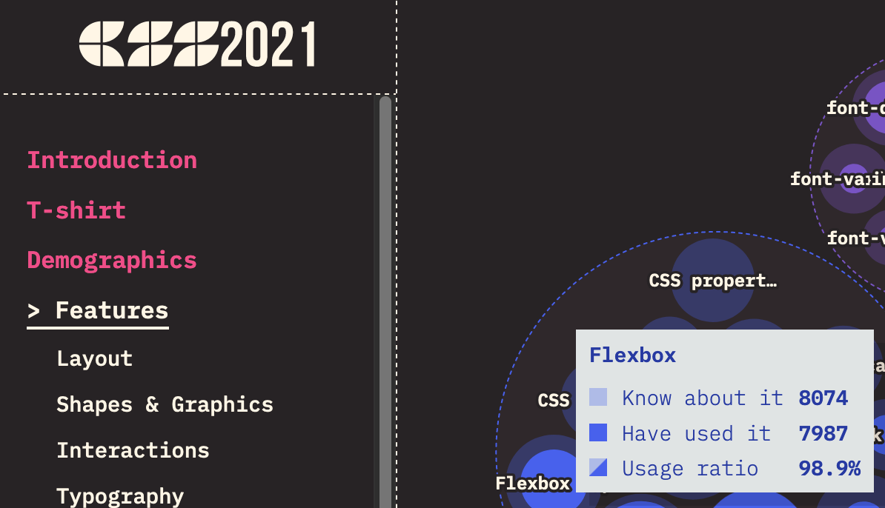

The many flavours of enterprise CSS grid
By Chen Hui Jing / @hj_chen
Hello everyone! This is the first conference I'm speaking at since COVID happened so it does feel kind of surreal. I'm very happy to be here and grateful to the organisers for giving me the opportunity to talk to all of you about my favourite topic in the world, CSS.
We're at a frontend conference today, right? So I'm going to assume a lot of us are in the business of how displaying web content on a digital screen. Which could be of any and all sizes. For the next half an hour, we're going to think about, more specifically, the laying out of content these screens.
🇲🇾
👾
🏀
🚲
🖌️
👟
💻
🖊️
🎙
🐈⬛
🧗
🏳️🌈
My name is Hui Jing. It's a Chinese name, so my family name comes first. I'm not a complicated person, so these emojis pretty much cover who I am as a person.
Shopify
I also have a day job, with Shopify, as a senior frontend developer. Because you know, I like being able to pay my rent and stuff.
Screens, screens, screens
Image source: Inch Calculator
If your content is going to be rendered by a browser engine, then your main mode of communication with the browser for styling content has to be CSS. And I'm sure everyone today has their own opinion about CSS, some of you might love it as much as I do, while others might see of it as a hard-to-deal with API you would like to avoid as much as possible.
Regardless of your opinions on CSS, I'm not here to tell you what to think or how to feel. The reality is that browser engines today are much more capable than before, they can lay out content much better than before. And it's in our best interest to know how to make full use of the browser's web layout capabilities.
Technology evolves very fast, I know, but as of now, most web interactions involve a screen. And these screens can be as small as a watch-face or as large as a 70-inch super HDTV. And you, the developer or designer or creator, can't really control this.
Image credit: Jyotika Sofia Lindqvist
This means, the way we think about designing layouts on the web cannot be like anything else that is fixed. It's quite a different mental model, and so, the tools we use must suit this fluid, interactive medium. Luckily for us, now that Flexbox and Grid are very well supported across all major browsers, our toolbox has been greatly upgraded.
Both of these layout models were introduced after the web had evolved into more than just a document viewer. They were built to handle application interfaces which would be viewed across many different screen sizes.
.wrapper {
display: -webkit-box;
display: -webkit-flex;
display: -ms-flexbox;
display: flex;
}
MDN: Backwards Compatibility of Flexbox Admittedly, Flexbox had a relatively rocky rollout, as browsers implemented experimental versions of the syntax before the specification had been nailed down. But by 2015, all the major browsers had updated to use the latest specification and the implementation was considered stable.
Browser configuration pages
about:config
chrome:://flags
Browser vendors and specification authors learned from the Flexbox rollout and did Grid differently. They still needed to developers like you and I to test out this new layout model, but instead of using vendor prefixes, they chose to implement the pre-finalised version of Grid behind a feature flag.
This meant that if developers wanted to use it, they had to manually access the browser's configuration, you know, that page that warns you your warranty is null and void if you change things? No, I'm kidding, but it does make it clear that you could potentially break something.
Non-developers would most likely never encounter nor attempt to access these settings, hence, this approach allowed browser vendors to still collect feedback from web developers while minimising the odds that they would actually ship an un-finalised syntax to production before the implementation itself was ready and mature.
Grid release dates
Grid was rolled out in a very coordinated manner back in 2017, with the four major browsers all shipping in the month of March, and by October, even Edge and Samsung Internet got it.
Fast forward to today, the percentage of internet users surfing the web with browsers that support Flexbox and Grid is overwhelmingly high. So browser support is no longer a valid argument for why adoption rates are lower than expected.
State of CSS 2021 survey

Flexbox: 98.9%
Grid: 83.5%
https://2021.stateofcss.com/en-US/
For what it's worth, Flexbox is everywhere. It has become the go-to for many web layouts, and after seeing my thousandth “how to centre something vertically” article, I'm not surprised it caught on very well.
And even though this survey has a relatively small sample size of 8075 developers, it still prompted me to wonder why and how Grid's usage numbers could be higher.
Among the 13 links I have in my bookmarks bar, I could only find Grid usage on CodePen, Discord, Imbox and Spotify. And only Spotify seemed to really embrace Grid as a page layout tool. Named grid areas and all.
⚠️ Disclaimer ⚠️
The following theory may or may not oppose your view on the matter, and that is PERFECTLY FINE. I am not here to tell you what to think, merely here to share a theory based on my personal observations and experiences. You are absolutely free to agree, disagree or not care at all.
I have a theory.
It has to do with how people have been using and building for the web over the years. Once the web protocol and source code was released into the public domain, it really started to take off. People started creating websites left-right-and-centre.
You could share your love of your favourite band, or talk about your life like a diary, or post pictures of cats, all from behind your keyboard. Lots of other people, whom you might never meet in person, could consume all that content, also from behind their keyboards. And you know what else people realised they could do? They could create websites to sell shit and make a buck.
Dotcom bubble (1995-2002)
Source: The History of the Dotcom Bubble
The dotcom bubble did burst eventually but it did not erase the fact that the web is a place where you can run an economically viable business. If we boil it down, the web is a data transmission technology, which we leverage for many different purposes.
I've heard opinions that express some level of dismay of how complicated the web has become. And I won't deny that the web can be complicated, but it has retained much of its original simplicity as well. I don't think it's hyperbole to say that if you knew how to create and publish a website back in 1994, you could still create and publish that same website today.
Source: Michel Buffa's Video Games Page in 1994
Sure, maybe you'd have to figure out a modern web hosting solution, but this is a website, and it can exist on the internet today, just like it did back in 1994. It's just that when commerce and money is involved, complexity becomes inevitable, in my humble opinion.
Javascript came into the picture in 1995, because there was a need for a scripting language that could run on the client-side, apparently to do form validation. Not sure how true that part is, but needing a lightweight scripting language that could run on the client was real.
A couple years later, the concept of AJAX, short for Asynchronous Javascript and XML, started to take off because it allowed content on the page to be updated dynamically without reloading the entire page. The concept on which Single Page Applications or SPAs are built on.
This term “Single Page” is so misleading to me, because my mind has anchored the word page to physical books. So even the largest book I can think of is around this size. But when you think about a lot of the SPAs out there these days, it's more like a page the size of this room.
With the increase in scale and hence complexity, the organisation of code becomes a lot more crucial, and ideally, some form of process and standards would need to be introduced.
I've found that I haven't encountered this aspect of CSS grid implementation as much as I would have liked. It might be because at larger organisations, with proprietary codebases, most folks probably can't directly talk about what they are doing either.
Thankfully, hypothetical scenarios are not proprietary, and we can use them as a basis for discussion today.
Parent-child relationship
Let's do a quick run-through of Grid. Similar to Flexbox, it involves a parent-child relationship between the container and its immediate children. Grid properties on the container can have an impact on the grid items and items themselves have an "awareness" of their siblings.
Basic grid syntax
Item A
Item B
Item C
Item D
Item E
Item F
Item G
Item H
Item I
The bare minimum to start using grid as a layout tool is setting display to grid, then defining some columns. Theoretically, you don't even have to be explicit with the rows unless you want to. Because the row height will naturally be whatever it needs for the content to fit.
If your grid needs to be more complicated, there are helpful properties and functions available to keep your code neat. The gap property makes it easy to have spacing between your grid items. The repeat() function, which can let you DRY out your code.
Named grid areas
Banner
Links and stuff?
Your main content
Footer, for copyright and moar links?
A particularly useful feature which I'm a big fan of is named grid areas. Which you might have noticed in the screenshot earlier of Spotify's interface. After you've set up your rows and columns, you can explicitly name specific areas of the grid via a rather visual syntax.
The structure of the grid-template-areas value is a reflection of your grid, so each of these 3 lines enclosed with quotes corresponds to the 3 rows, while each value within the line corresponds to a column.
I make use of this for designs that need to break at multiple viewport widths because all my changes can be contained on the parent selector. Once I've assigned each grid item its area, I don't need to change it regardless of what I do to the parent.
Placing grid items
Not my cat
He just naps in my house. But isn't he super cute?
Grid makes overlapping elements in your design more controllable than other methods which involve absolute positioning, transforms or negative margins. Because you can plan how the overlap should occur across the range of viewports you're working with.
A pretty standard grid
Size
Min
Max
Cols
Margin
Gutter
xs
320px
639px
4
16px
16px
sm
640px
899px
8
30px
16px
md
900px
1199px
12
50px
16px
lg
1200px
1599px
12
90px
24px
xl
1600px
-
12
>180px
24px
Most applications have some sort of a design system or at least, some design guidelines to maintain consistency across different pages and components. Often, a grid system is part of that.
These are specifications for a rather standard looking 12 column grid.Building something like this with CSS is fairly straightforward with CSS grid.
There are plenty of different approaches you could take to write CSS grid code for an application powered by a Javascript framework. We'll go through a couple of them just to give you an idea. I'm using React here, but I think these ideas are transferable to other frameworks as well.
Option 1: vanilla CSS (or SCSS)
.grid {
min-width: 320px;
max-width: 1600px;
display: grid;
grid-template-columns: repeat(4, 1fr);
gap: 1em;
margin-left: 16px;
margin-right: 16px;
}
@media screen and (min-width: 640px) {
.grid {
grid-template-columns: repeat(8, 1fr);
margin-left: 30px;
margin-right: 30px;
}
}
@media screen and (min-width: 900px) {
.grid {
grid-template-columns: repeat(12, 1fr);
margin-left: 50px;
margin-right: 50px;
}
}
@media screen and (min-width: 1200px) {
.grid {
gap: 1.5em;
margin-left: 90px;
margin-right: 90px;
}
}
@media screen and (min-width: 1600px) {
.grid {
margin-left: 180px;
margin-right: 180px;
}
}
One option is to just write the CSS. The rationale for this approach is that the grid would inform where everything on the application would sit within the interface. Hence, it could live in the global stylesheet that gets loaded everywhere, since the expectation is that it would be used everywhere.
All of the specifications from the table above would be defined on the grid container, while placement of items within the grid can be assigned to each individual grid item (if necessary) or be auto-placed by the browser.
Option 1: vanilla CSS (or SCSS)
.grid__item--full,
.grid__item--half,
.grid__item--third,
.grid__item--quarter {
grid-column: 1 / -1;
}
@media screen and (min-width: 640px) {
.grid__item--quarter {
grid-column: span 4;
}
}
@media screen and (min-width: 900px) {
.grid__item--half {
grid-column: span 6;
}
.grid__item--third {
grid-column: span 4;
}
.grid__item--quarter {
grid-column: span 3;
}
}
This approach allows the item placement code to go on the component styles. And if there are common placement patterns that recur very often in the design, then you could consider having some pre-written styles to cater to those situations.
Option 1: vanilla CSS (or SCSS)
.custom-thingy {
grid-column: 1 / -1;
font-size: var(--step-1);
}
@media screen and (min-width: 640px) {
.custom-thingy {
grid-column: 1 / 6;
padding-top: 2em;
padding-bottom: 1em;
}
}
@media screen and (min-width: 900px) {
.custom-thingy {
grid-column: 1 / 7;
}
}
And if you do need some custom placement, that code could go into the component-specific styles instead.
Option 2: Container and Item components
src/
└── components/
├── Col/
│ ├── Col.module.css
│ └── Col.tsx
└── Grid/
├── Grid.module.css
└── Grid.tsx
Another approach is to have wrapper components for the container and item respectively. This means the grid code is tied to the wrapper components instead of being loaded in the global stylesheet.
I ran into some specificity issues with this approach with CSS modules that I managed to workaround relatively painlessly, but it is something to take note of.
The setup involves creating a Grid component and a Col component and their corresponding stylesheets.
Grid.tsx
import { ReactNode, createElement } from "react";
import styles from "./Grid.module.scss";
interface GridProps extends React.HTMLProps {
className?: string;
children: ReactNode;
tag?: keyof JSX.IntrinsicElements;
}
export default function Grid({
className = "",
children,
tag = "div",
...props
}: GridProps) {
const Wrapper = tag;
return createElement(
Wrapper,
{
className: `${styles.grid} ${className}`,
...props
},
children
);
}
Col.tsx
import { ReactNode, createElement } from "react";
import cn from "classnames";
import styles from "./Col.module.scss";
interface ColProps extends React.HTMLProps {
className?: string;
children: ReactNode;
colWidth?: "full" | "half" | "third" | "quarter";
tag?: keyof JSX.IntrinsicElements;
}
export default function Col({
className = "",
children,
colWidth,
tag = "div",
...props
}: ColProps) {
const Wrapper = tag;
return createElement(
Wrapper,
{
className: cn(className, { [styles[`${colWidth}`]]: colWidth }),
...props
},
children
);
}
These components don’t do much other than provide grid-related styling, so they’re not very big or complicated. They have props for passing custom class names, modifying the element tag (which defaults to div) but generally does not restrict users from passing in other props either.
Col.module.css
.full,
.half,
.third,
.quarter {
grid-column: 1 / -1;
}
@media screen and (min-width: 640px) {
.quarter {
grid-column: span 4;
}
}
@media screen and (min-width: 900px) {
.half {
grid-column: span 6;
}
.third {
grid-column: span 4;
}
.quarter {
grid-column: span 3;
}
}
The styles would be the same as in option 1 but because this approach uses CSS modules, you can sort of be more “casual” with naming your classes? The grid container styles are literally exactly the same as option 1, while the item classes can look like this or however you like to name them.
CustomThingy.module.scss
p.customThingy {
grid-column: 1 / -1;
font-size: var( --step-1);
}
@media screen and (min-width: 640px) {
p.customThingy {
grid-column: 1 / 6;
padding-top: 2em;
padding-bottom: 1em;
}
}
@media screen and (min-width: 900px) {
p.customThingy {
grid-column: 1 / 7;
}
}
The issue I ran into when using these components was that, if I wanted to override the pre-written item styles, I had to bump the specificity of my component styles up a little bit because CSS modules loaded the component styles before the wrapper styles.
I like to keep specificity low in general, so I went with bumping up by 1 element tag’s worth. If someone more knowledgeable has advice on a better way of dealing with this style loading order, please let me know.
Option 3: Using Tailwind classes
⚠️ Yet Another Disclaimer ⚠️
The following opinion may or may not oppose your view on the matter, and that is PERFECTLY FINE. You are absolutely free to agree, disagree or not care at all.
I'll be up front about this, I'm not the biggest fan of how Tailwind does CSS. The major issue I have with it is, it sees the cascade as a problem to be fixed, rather than attribute to be embraced. If you use Tailwind the way it was intended, the cascade is almost completely negated.
tailwind.config.js
module.exports = {
theme: {
screens: {
xs: "320px",
sm: "640px",
md: "900px",
lg: "1200px",
xl: "1600px",
maxSm: { max: "639px" },
maxMd: { max: "899px" },
btwSmMd: { min: "640px", max: "899px" }
},
},
prefix: "tw-"
};
It is called Cascading Stylesheets for a reason. Maybe call it “Tailwind SS” instead? That being said, this is not a hill I need to die on.
For now, I accept the reality that there are quite a number of teams that use Tailwind CSS in their applications and it’s working well for them. That’s great. And if those teams want to use CSS grid? Well, it is absolutely doable.
The grid specification can be set up like so (abstracted to just show the breakpoints).
TailwindThingy.tsx
export default function TailwindThingy {
return (
Option 3: Use Tailwind classes
Well, this is spicy
FWIW, Tailwind has managed to support grid fairly well in this latest
version
You will have to learn the tailwind classes to use them correctly
This basic example is able to match the previous 2 options
Tailwind comes out the box with opinionated defaults
But they do allow you to customize your own if theirs doesn't fit you
At some point, there will be bigger issues to think about
Does it make sense to abstract constantly repeated patterns into
something much DRY-er?
There also remains the issue of code maintenance, which all 3 options
still have
);
}
You would then have to apply these classes to your component accordingly. I’m sure the Tailwind experts have come up with something to abstract regularly used combinations of classes into something else but this is the most basic version and it achieves the same end result as the other options.
Stuff worth reading
https://alistapart.com/article/the-story-of-css-grid-from-its-creators/
https://thehistoryoftheweb.com/timeline/